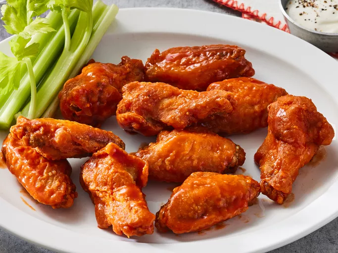

Chicken Wings

Description
What’s not to love about these fried chicken wings? They’re crispy on the outside, tender on the inside, and bursting with irresistible flavor. This fried chicken wing recipe will quickly become a tried and true favorite.
Ingredients
- Chicken: This recipe makes 12 chicken wings, but it’s easy to double or even triple it for a larger crowd.
- Seasonings: What makes these fried chicken wings so flavorful? A combination of seasoned salt, coarse salt, black pepper, paprika, and cayenne pepper.
- Flour: Coat the wings in a seasoned all-purpose flour mixture before frying for extra crispy skin.
- Oil: Use a neutral oil with a high smoke point, such as vegetable oil, to fry the chicken wings.
- Sauce: Use store-bought Buffalo wing sauce or make your own at home.
Steps
- Gather all ingredients
- Season chicken wings lightly with seasoned salt.
- Mix flour, salt, black pepper, cayenne pepper, and paprika together in a wide, shallow bowl. Press wings into flour mixture to coat and arrange in a single layer on a large plate. Refrigerate coated wings for 15 to 30 minutes.
- Dredge wings again in flour mixture and return to the plate. Refrigerate wings once more for 15 to 30 minutes.
- Heat oil in a deep fryer or large saucepan to 375 degrees F (190 degrees C).
- Fry chicken wings in hot oil until crisp and juices run clear, 10 to 12 minutes. An instant-read thermometer inserted into the thickest part of the meat, near the bone, should read 165 degrees F (74 degrees C).
- Transfer fried wings to a large bowl. Drizzle sauce over wings and toss to coat.
- Serve and enjoy!
Back To Home